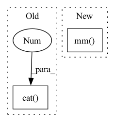

Pattern ID :40311
Before Change
B = torch.sum(torch.mul(A, V), 0).view(1, -1) // 1 x V
else:
temp = F.softmax(temp, 0) // N x 1
A = torch.cat( (A, temp), 1 ) // N x C
B = torch.cat((B, torch.sum(torch.mul(temp, V), 0).view(1, -1)), 0) // C x V -> 1 x C x V
B = B.view(1, B.shape[0], B.shape[1]) // 1 x C x V
C = self.fcc(B) // 1 x C x 1After Change
q_max = self.q(m_feats) // compute queries of critical instances, q_max in shape C x Q
A = torch.mm(Q, q_max.transpose(0, 1)) // compute inner product of Q to each entry of q_max, A in shape N x C, each column contains unnormalized attention scores
A = F.softmax( A / torch.sqrt(torch.tensor(Q.shape[1], dtype=torch.float32, device=device)), 0) // normalize attention scores, A in shape N x C,
B = torch.mm( A.transpose(0, 1), V) // compute bag representation, B in shape C x V
// for i in range(c.shape[1]):In pattern: SUPERPATTERN
Frequency: 3
Non-data size: 2
Instances Fragment ID: 114438218
Project Name: binli123/dsmil-wsi
Commit Name: 37d945844a0af37d411b5f1d3fca75a72b4aa979
Time: 2021-04-21
Author: bli346@wisc.edu
File Name: dsmil.py
M Class Name: BClassifier
N Class Name: BClassifier
M Method Name: forward(3)
N Method Name: forward(3)
M Parent Class: nn.Module
N Parent Class: nn.Module
M File Name: dsmil.py
N File Name: dsmil.py
M Start Line: 42
M End Line: 56
N Start Line: 42
N End Line: 51
Before Change
@staticmethod
def _single_calc(fn_input, sequence_input, linear_param):
out = fn_input - fn_input.mean(dim=0, keepdim=True)
out0, out1 = torch.nn.functional.linear(torch.cat( [out, sequence_input], 1 ) ,
linear_param,
None).chunk(2, 1)
return torch.sigmoid(out0) * out1.tanh()After Change
def _single_calc(fn_input, sequence_input, linear_param):
out = fn_input - fn_input.mean(dim=0, keepdim=True)
features = out.size(1)
out = torch.mm( out, linear_param[:features]) + torch.mm(sequence_input, linear_param[features:])
return torch.nn.functional.relu6(out[:, :features]) * out[:, features:].tanh()
@staticmethod Fragment ID: 114438219
Project Name: homebrewnlp/homebrewnlp
Commit Name: 2c4b92319ccca8f3a6f7c2677b9f0fbf88f7b8db
Time: 2020-08-05
Author: 39779310+ClashLuke@users.noreply.github.com
File Name: module.py
M Class Name: ReversibleRNNFunction
N Class Name: ReversibleRNNFunction
M Method Name: _single_calc(3)
N Method Name: _single_calc(3)
M Parent Class: torch.autograd.Function
N Parent Class: torch.autograd.Function
M File Name: module.py
N File Name: module.py
M Start Line: 8
M End Line: 12
N Start Line: 7
N End Line: 10
Before Change
replacement_indices = torch.stack([replacement_row_indices,
row.indices()[1, :]])
new_indices = torch.cat([new_indices, replacement_indices], -1)
new_values = torch.cat( [new_values, row.values()], -1 )
new_matrix = torch.sparse_coo_tensor(
new_indices, new_values, size=matrix.shape,
dtype=matrix.dtype, device=matrix.device)
return new_matrixAfter Change
size=matrix.shape, device=matrix.device,
dtype=matrix.dtype
)
result = torch.sparse.mm( removal_matrix, matrix) \
+ addition_matrix
return result
Fragment ID: 114438222
Project Name: v0lta/pytorch-wavelet-toolbox
Commit Name: ced7891d6e879825d3e5dc0d52e2c7fb08b22440
Time: 2021-09-27
Author: moritz@wolter.tech
File Name: src/ptwt/sparse_math.py
M Class Name: AnonimousClass
N Class Name: AnonimousClass
M Method Name: sparse_replace_row(3)
N Method Name: sparse_replace_row(3)
M Parent Class:
N Parent Class:
M File Name: src/ptwt/sparse_math.py
N File Name: src/ptwt/sparse_math.py
M Start Line: 82
M End Line: 107
N Start Line: 82
N End Line: 105